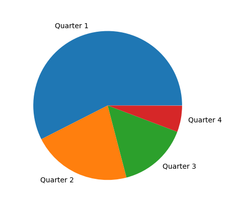
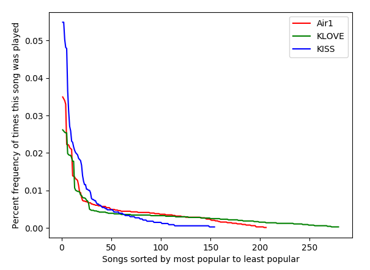

The Stats
After more than a week of running the program, I finally had my data. And, boy, was it juicy stuff. First, let's look at the most popular song on Air1 at the time, "Symphony" by "Switch." This graph shows when it is played on Air1:
Exhibit A
As you can see, Air1 loves to play this song - to my pain. The graph confirms my theory that Air1 plays
this song way too much. When I started getting sick of listening to it every time I got in the car, I wondered if it was just
because I was listening in the
mornings, and the station was playing popular songs more often in the mornings. This graph disproves that. Air1 has an addiction
to this song, and no time of day is safe from its tyrannical melody.
That brings us to another observation. Air1 plays the same music at every time of the day. It doesn't play slower music at night,
or wake-up music in the mornings; it's all the same. Once a song has been played, the station puts it on what I can only describe
as a "cooldown." The more popular the song, the shorter the cooldown. Once that wait time is up, the station plays the song again,
just like clockwork.
This pattern would be understandable if the song was recently released, but Air1 started playing this song
at least two weeks before I started collecting this data. Only recently has the station started playing it
this much. When the song was first played, it was my favorite on Air1, but it was not actually played very
frequently, even though it deserved to be played more. Air1 mostly ignored the song for the first two weeks.
When Air1 actually realized that people enjoyed the song, the station started playing it on repeat, as the
graph shows. The problem is that they delayed the "launch" of the song - the boost in play frequency - by at
least two weeks. I can imagine that this made listeners who liked the song at the beginning to become frustrated that the song was
not played enough, and listeners at the end become frustrated that the song was being played too much. They
missed the best opportunity to play the song the most, which was at the very beginning. They should have
realized the song was going to be popular, sooner.
The song "Symphony" is a good example of a top 10 song on Air1. As they should, Air1 wants to play the most
popular songs the most ... but how often are we talking about? Well, according to my data, it turns out that the top 10 songs
constitute 26.6% of all songs played on the station at any given time! This means that if you listen to
Air1 for 30 minutes, you will listen to an average of 7.6 songs during that time, so that means that the
probability that you will not hear one song from the top 10 is 11.3%. I hope you're not sick of any of
those songs!
Exhibit B
This graph shows the play percentage of each slice of the songs played on Air1. Quarter 1 is the top 25%, quarter 2 is the upper-middle 25%, etc.
Air1 has obviously put a priority on playing the newest, most popular songs and has neglected to play
lesser-known songs. Interesting business choice. There's nothing wrong with that, except that Air1's most
regular listeners are almost certainly bored out of their minds or have just given up on caring. Now, I'm not a
businessman, but I do know that's is not a great idea for a business to prioritize its least loyal customers
at the expense of its most loyal customers. This is what Air1 is doing by playing their top songs this often.
Now, when I saw these results I admit that I thought the verdict was made. After all, this is egregious
repetition! But let's look at the other two stations. If you step back and look at the big picture, and this is what you see:
Exhibit C

These are what I call the "frequency curves" of each station. These graphs show us the big picture of how
often a song of a certain popularity is played on the station.
The X axis represents each distinct song played on the station sorted from most popular to least popular. So
when x is 1, y is the percentage of times the most popular song was played on the station (out of all the
songs played). As it should be, there is a negative correlation between the popularity ranking of a song (the
x axis) and the times it is played (the y axis).
This is a type of power-law distribution, a pattern
that arises when a small minority of subjects hold the majority of a certain quantity. This pattern is seen
everywhere in our world and it pops us in the most random places. Here are a few examples of phenomena that
follow the power-law pattern: the distribution of wealth, the distribution of the mass of stars in the
universe, the size of cities, the frequency of words in text, the magnitude of wars and terrorist attacks, and
even the diameters of dust devils! Most of the experiences in life we consider "random" are really just the
result of complex interactions that actually form regular patterns. Our brains are usually just too distracted
by the present moment to notice the bigger picture.
Back to the song frequency distribution. These stations aren't wrong to use a power-law distribution; the
problem is the bend in the curve. This is the curve that I would like to see radio stations use:
Exhibit D

I believe that almost all radio stations should adopt this curve. From a business standpoint, this is optimal, because it gives
listeners what they want. New listeners still get a good taste of the most popular music, because the curve still peaks at the
y-axis, while regular listeners get a good taste of variety because the curve's rise is not too steep. If only radio stations
could just use math to make their decisions! The world would be a better place for all radio listeners!
We can also infer the size of the song collection of each station from how long the "tails" of each line
extend. I collected data from KISS's website for about a third of the time as Air1 and KLOVE, so if I wanted
to quantitatively compare the size of each station's music collection, I should have collected data on KISS for a
little longer. All I really care about, however, is a qualititive comparison of which station plays more
songs, and it looks settled that the song collection of KISS is at least the same as or smaller than Air1's
collection, and Air1's collection is smaller than KLOVE's. Not bad for Christian radio, considering that the CCM (Christian
Contemporary Music) genre is much smaller than secular pop.
These results are surprising! At the end of the day, Christian radio might deserve some due criticism about its repetition,
but if we are being fair, secular stations deserve that same complaint too.